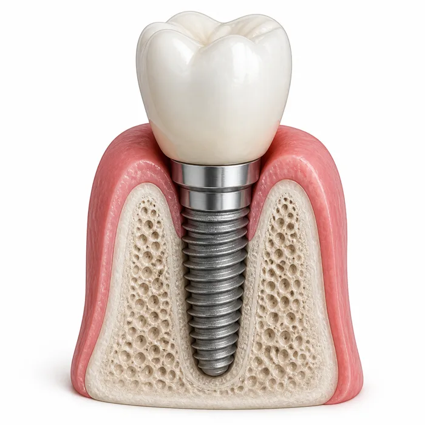

부가세 계산기
공급가↔합계 10%
부가가치세는 물건이나 서비스 가격의 10%입니다. 헷갈리는 이유는 방향이 두 가지이기 때문입니다. 공급가액에서 부가세를 더할 때는 ×0.1이지만, 부가세가 포함된 합계에서 거꾸로 뺄 때는 ÷1.1을 해야 합니다. 110만원짜리 결제금액의 부가세는 11만원이 아니라 10만원입니다.
세금계산서를 발행하거나 받을 때, 견적서를 쓸 때, 사업 경비를 정리할 때 이 계산이 필요합니다. 일반과세자는 매출세액에서 매입세액을 빼고 남은 금액을 신고·납부합니다.
참고로 면세 대상(기초 생필품, 의료·교육 서비스 일부)에는 부가세가 붙지 않고, 간이과세자는 업종별 부가가치율을 적용해 다르게 계산합니다.
이렇게 계산해요
- 부가가치세율은 10%입니다.
- 합계금액 기준이면 1.1로 나눠 공급가액을 구합니다.
예시로 보기 — 합계 1,100,000원에서 부가세 분리
합계 (부가세 포함)1,100,000원
÷ 1.1= 공급가액
공급가액1,000,000원
부가세 (10%)100,000원
이것만은 확인하세요
- 합계에서 10%를 빼면 틀립니다. 110만원의 10%는 11만원이지만 실제 부가세는 10만원입니다. 반드시 1.1로 나누세요.
- '부가세 별도' 표기를 확인하세요. 견적서에 별도라고 적혀 있으면 최종 청구액은 10% 더 큽니다.
- 간이과세자는 계산이 다릅니다. 업종별 부가가치율이 적용되어 일반과세자와 세액이 다릅니다.
- 면세 품목에는 부가세가 없습니다. 도서, 기초 식료품, 일부 의료·교육 용역이 해당합니다.
자주 묻는 질문
부가세율은 몇 %인가요?
10%입니다.
합계에서 부가세를 어떻게 빼나요?
합계를 1.1로 나누면 공급가액, 나머지가 부가세입니다.
AD · 애드센스 / 쿠팡 배너 자리